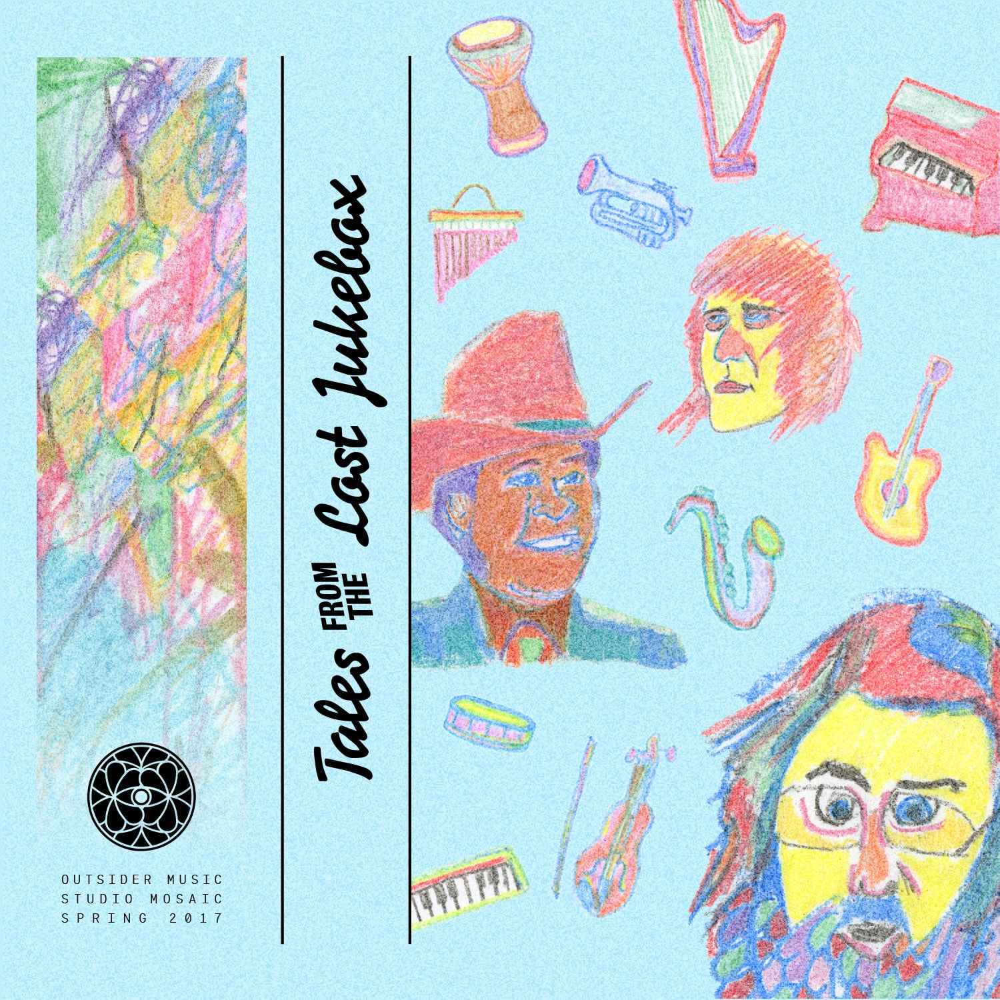

An Outsider Music Mix by Studio Mosaic

Tales From the Lost Jukebox is dedicated to the weirdos, the rejects, the loners, the outcasts, the not-quite-there, the outright bizarre and the absolutely lost. This mix explores a vast landscape across time, space, genre, culture, fame, and notoriety. These artists created amazingly unique work that either defines their canon or represents the outer boundaries of their artistic potential. Songs of heartbroken seclusion, indulgent funk, subversive hip-hop, and pure eccentricity immerse you in honest self-expression. These tracks stray away from conventional genres, contorting style, instrumentation, lyricism, melody and lack thereof into a more dynamic (albeit less digestible) piece of art. We don’t expect listeners to like, love, or comprehend every track and artist but instead appreciate the place of emotional authenticity from which it was born. Our intention was to avoid glorifying these artists as deliberate crusaders against popular music; rather we sought to appreciate their work for what it is.
Many of the artists throughout possess fascinating yet fractured narratives. Ariel Pink, Brian Eno, Daniel Johnston, Captain Beefheart, Space Lady, David Lynch, Arthur Russell, Bob Dylan, and many others have each spurred their own cult status among various circles of avant-garde enthusiasts and music connoisseurs. Some portray a solo-flyer sort of persona, such as Dean Blunt toasting alone in spooky tones; and R. Stevie Moore, who continues to release DIY music at the prolific speed of a classical composer.
Some regard these artists as geniuses of their craft, while others regard them as creators of meaningless noise and willful deviants of proper music. Whatever side you're on, there is no denying that this music dares to inhabit artistic space yet to be occupied and therefore expands music as a whole.
Have fun, freaks.
0:00 R. Stevie Moore - Back In Time
4:44 The Beach Boys - Cabin Essence
6:58 Brian Eno - Burning Airlines Give You So Much More
8:51 Ween - Ice Castles
10:41 The Stepkids - Cup Half Full
13:46 Frank Zappa - Let’s Make The Water Turn Black
15:49 The Monks - I Hate You
19:09 Captain Beefheart - Electricity
22:12 Thee Oh Sees - Gilded Cunt
24:49 Tom Tom Club - L’Elephant
27:16 Ryan Power - Identity Picks
32:44 Durutti Column - Never Known
38:09 Nite Jewel - Mind & Eyes
41:36 Syd Barrett - Opel
44:49 Doug Hream Blunt - Gentle Persuasion
48:49 Gary Wilson - Chromium Bitch
51:08 William Onyeabor - When The Going Is Smooth And Good
57:36 LCD Soundsystem - Sound of Silver
1:01:42 Ween - Happy Colored Marbles
1:04:13 Jerry Paper - The Real Feel
1:06:40 Mort Garson - Symphony for a Spider Plant
1:09:02 David Lynch - In Heaven
1:10:31 Ariel Pink - L'Estat (Acc. to the Widow's Maid)
1:13:25 Tom Waits - Clap Hands
1:16:56 Jonn Maus - Gay Rights
1:19:25 Space Lady - Ghost Riders In The Sky
1:23:12 Jon Hassell - Empire I
1:24:33 Arthur Russell - Soon to Be Innocent Fun / Let’s See
1:27:34 Flaming Lips - Chewin The Apple Of Your Eye
1:30:07 David Bowie - Art Decade
1:32:59 Prefab Sprout - Cue Fanfare
1:37:01 Velvet Underground - Lady Godiva’s Operation
1:41:52 Olivia Tremor Control - Frosted Ambassador
1:42:55 Connie Converse - John Brady
1:44:35 Allen Ginsberg - Put Down Yr Cigarette Rag
1:46:45 Software - Island Sunrise
1:50:36 Gary Wilson - Newark Valley
1:52:33 Bob Dylan - The Auld Triangle
1:55:18 Scritti Politti - A Little Knowledge
2:00:15 Daniel Johnston - Some Things Last a Long Time
2:02:25 Dean Blunt - Shook
2:04:15 Clara Rockmore - The Swan
2:05:28 William S. Burroughs - Uranian Willy
Genre: Outsider / Avant-garde / Lo-fi / Art rock
Release: April 2017
Duration: 02:07:28
Listener Accessibility: 7/10